发信人: wanting (落叶), 信区: outdoor
标 题: 交大自行车协会五周年杂志、徽章发放(转载)
发信站: 饮水思源 (2011年11月02日21:15:41 星期三)
【 以下文字转载自 bicycle 讨论区 】
【 原文由 wanting 于 2011年10月29日08:27:47 星期六 发表 】
【 原文链接 】
上海交通大学自行车协会五周年杂志、徽章发放
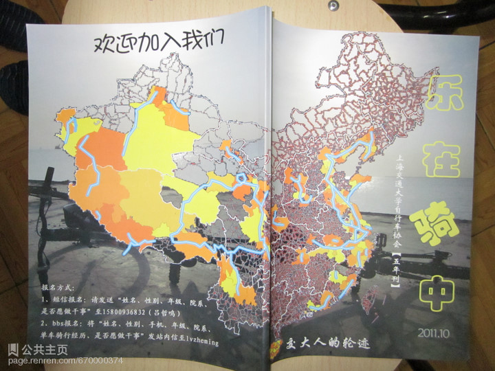 screen.width - 200){this.width = screen.width - 200}">
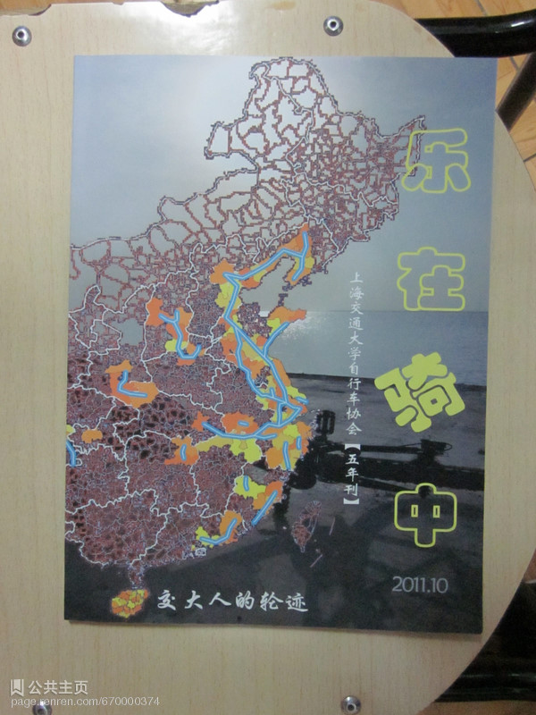 screen.width - 200){this.width = screen.width - 200}">
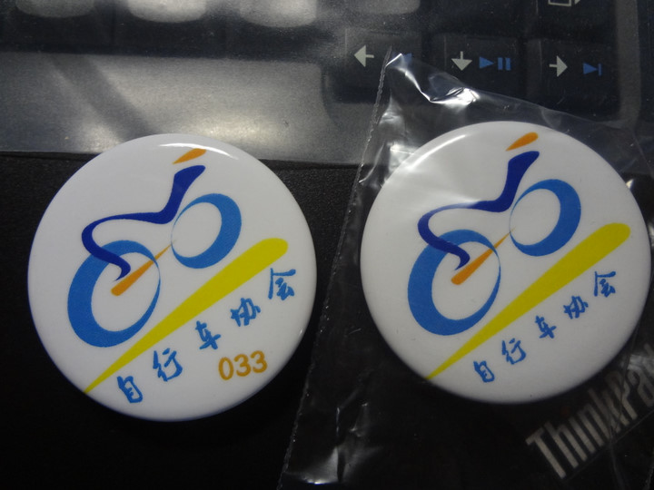 screen.width - 200){this.width = screen.width - 200}">
1. 活动简介：
为了感谢各界车友，特别是交大车友多年来对上海交通大学自行车协会的关心和支持，以
及老人们对车协做出的巨大贡献，也为了更好的推动上海交通大学自行车运动，上海交通
大学自行车协会在协会成立五周年之际，编辑《乐在骑中——交大人的足迹》一书——边
昕同学编辑，wanting、saar等策划和负责资料的收集，本刊封面的中国地图由zhouningyi学长绘制,昨天因为准备不充分考虑不周直接发帖没做说明,真心抱歉.书中也多出借用了zhouningyi学长的图片,未及时征求学长意见,在此一并致歉.真心抱歉~以及交大车协徽章——ronniealo
nso在旧有车协logo的基础上制作，发放给众车友。
2. 发放对象：所有热爱骑行的同学。
3. 活动详细：
初定于周四（2011年11月3日中午12:00-13:00（下雨延迟））于东区大转盘摆摊发放。
在校车友可于此时间内到东转领取。本次活动设3个摊位（流程）：
1) 流程1（摊位1）：已交会费成员直接领取车协徽章。未交会费车协成员补交20元会费领
取徽章，非车协成员填写个人资料附上会费20领取徽章。
愿意在车协认真做事的同学免除会费（基本要求：基本没有参加各类学校官方组
织或其他非运动类社团或已经决定退出，对自行车运动有一定的了解和热情，对特别热爱
自行车运动的同学可以不限制条件，下面附有车协构架）
2) 流程2（摊位2）：凭徽章在（老人/干事/成员）登记表上登记个人基本信息（姓名 性
别 手机号 车型 越野/绕圈/长途 专业年级）以及杂志序号（工作人员编号）
3) 流程3（摊位3）：在车协会旗上签名，会有专人替每一位同学拍照，届时会发放到交大
车协人人主页。另有山地车、公路车、折叠车以及头盔、骑行风镜等体验。
届时也邀请各车友携爱车、骑行服等助阵，以上同学免费获得所有东西。
活动结束后拍第六届上海交通大学自行车协会全家福。
4. 备注：
从即日起，交大车协徽章作为上海交通大学自行车协会会员唯一正式标志。会员凭此
徽章租车减10元租车费。
5. 在校车协老人、各届干事（无需邮寄者）也可于当日当时到场领取。
6. 外地车协老人提供个人联系方式、通信地址（稿件附有者可不需重复发送，届时会在b
bs 车协主页等公示（隐藏关键信息）），交大车协负责邮寄，预计11月底全部邮寄完成，
全部费用由交大车协承担。
7. 针对外地同学、已工作车友（非交大车协老人）等，交大车协提供徽章和杂志买卖：单
独购买徽章1个10元，单独购买杂志1册20元并赠送车协徽章。邮资按10元计。届时将钱款
打到吕同学（lvzheming 15800936832 ）支付宝lvzheming@vip.qq.com。并附上个人信息（姓名 性别 手
机号 邮寄地址）
8. 车协本学期余下活动：
11月11日交大车协预计将邀请老人、干事、部分热心骑友于滨江公园外烧烤。
11月中下旬12月上旬，交大车协将组织会员骑行奉贤（看海、参观上师大、华理）以
及七宝腐败游。
1月1日交大车协将邀请老人、干事、部分热心骑友聚会包饺子。
9. 上海交通大学自行车协会组织构架
wanting 15216712514 会长 职能：联系与协调，组织板聚，聚会等。
lorty 18801901480 装备部 职能：仓库管理以及车辆的更新、保养
和租车。
saar 13402058562 财务部 职能：管理协会帐目，联系赞助。
ronniealonso 18801902366 宣传部 职能：制作招新资料、传单、海报、视频
以及杂志制作等。
xxyj 13601760706 实践部 职能：制定出行计划， 负责活动中的
领队、押队等。
lvzheming 15800936832 联络部 职能：管理协会飞信、人人、人人主页、
车板等信息的更新，活动的召集，
人员的登记，活动的后续发帖等。
10. 本次活动将有部分杂志和徽章用于交流赠送，赠送对象：
1) 上海交通大学自行车协会相关老师，社总，体总等。
2) 上海各高校车协会长和自行车协会（沪外高校酌情考虑）。
3) 跑虫俱乐部、野外生存协会、Bicycle、running、outdoor板板主、车协热
心骑友和车板热心板友，D23修车师傅，社会各界关心交大车协成长的骑友。
4) 迪卡侬公司。
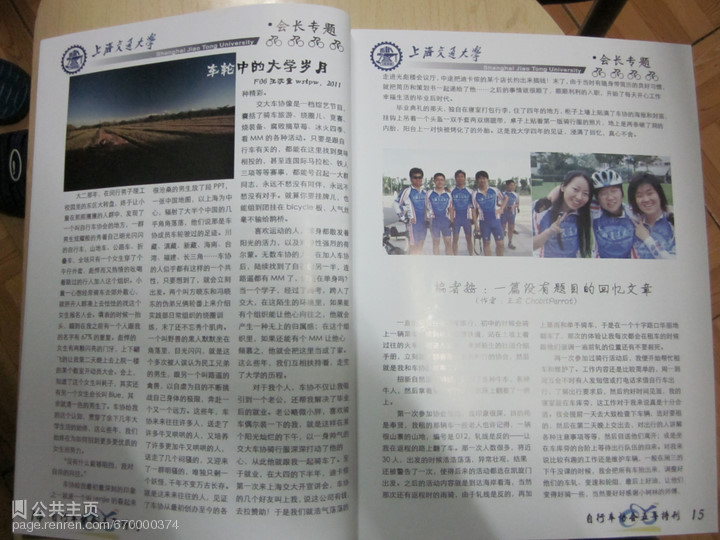 screen.width - 200){this.width = screen.width - 200}">
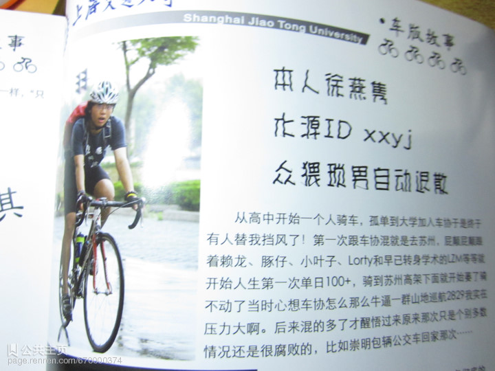 screen.width - 200){this.width = screen.width - 200}">
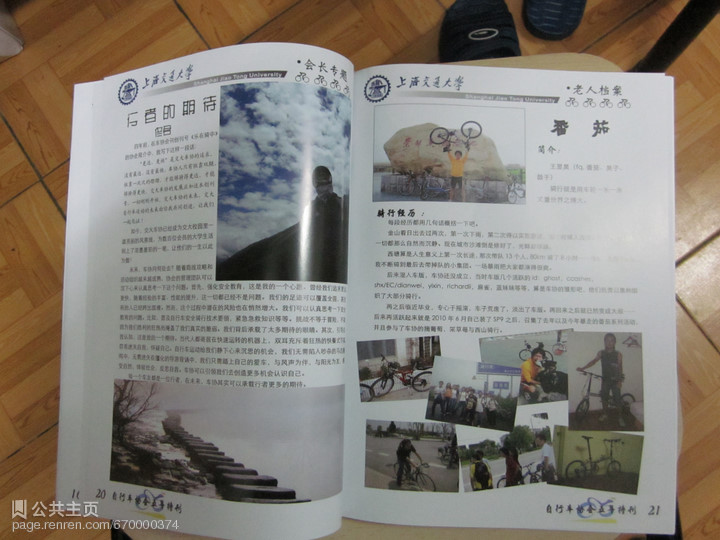 screen.width - 200){this.width = screen.width - 200}">
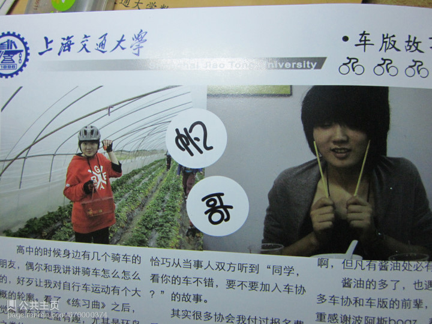 screen.width - 200){this.width = screen.width - 200}">
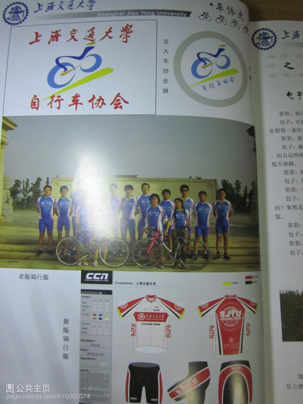 screen.width - 200){this.width = screen.width - 200}">
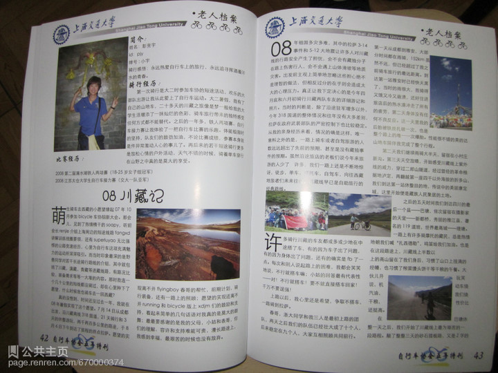 screen.width - 200){this.width = screen.width - 200}">
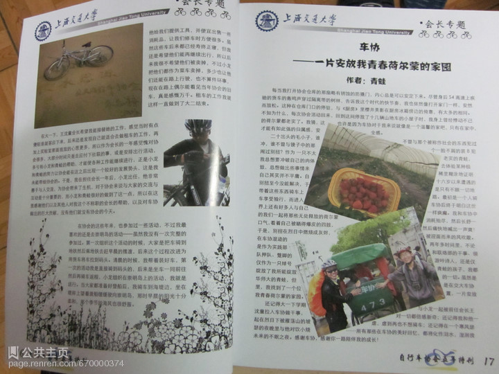 screen.width - 200){this.width = screen.width - 200}">
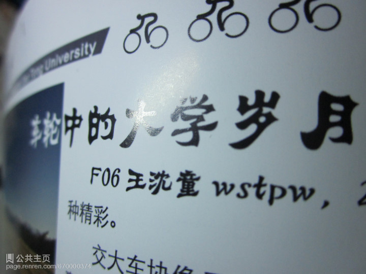 screen.width - 200){this.width = screen.width - 200}">
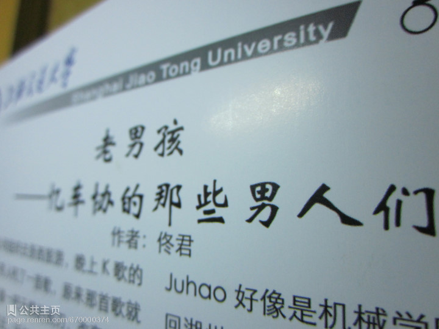 screen.width - 200){this.width = screen.width - 200}">
本次活动解释权归上海交通大学自行车协会所有。
上海交通大学自行车协会
2011/10/29
--
----bicycle----
诚征车友筹备车店
※ 来源:·饮水思源 bbs.sjtu.edu.cn·[FROM: 59.78.35.112]
※ 修改:·wanting 于 2011年10月29日08:29:25 修改本文·[FROM: 59.78.35.112]
※ 修改:·wanting 于 2011年10月29日08:30:50 修改本文·[FROM: 59.78.35.112]
※ 修改:·wanting 于 2011年10月29日17:30:34 修改本文·[FROM: 59.78.35.112]
※ 修改:·wanting 于 2011年10月30日10:56:27 修改本文·[FROM: 59.78.35.112]
--
※ 转载:·饮水思源 bbs.sjtu.edu.cn·[FROM: 59.78.35.112]
|